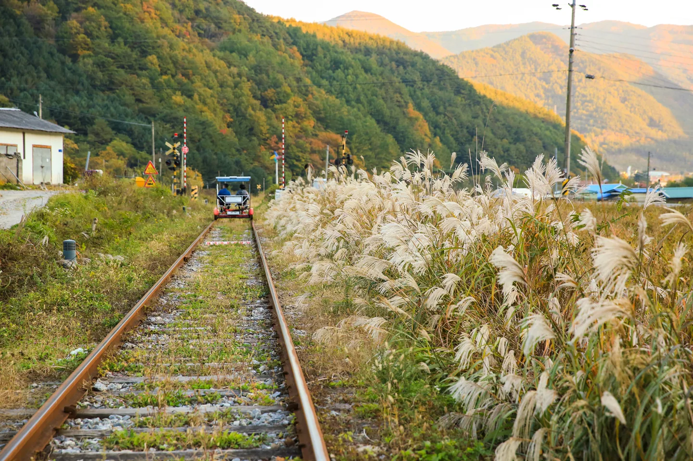
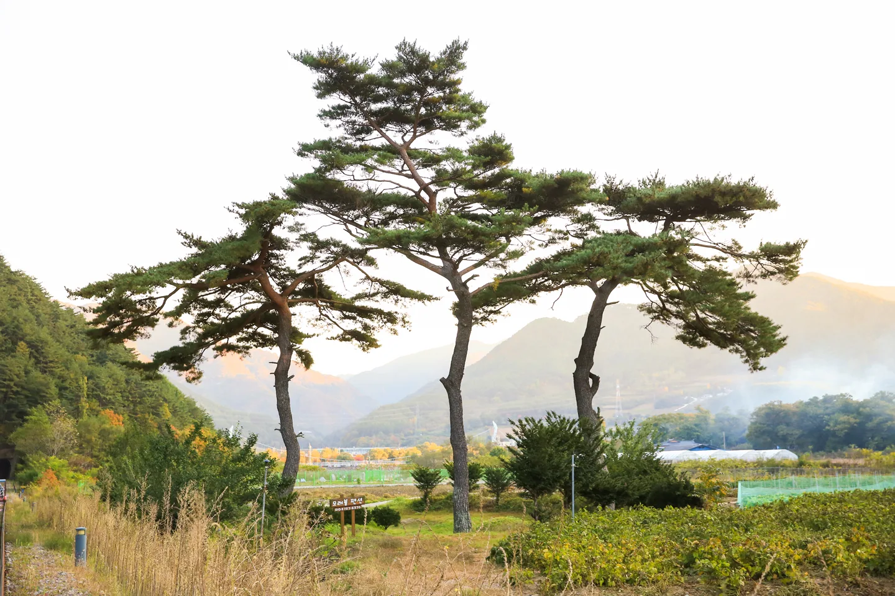
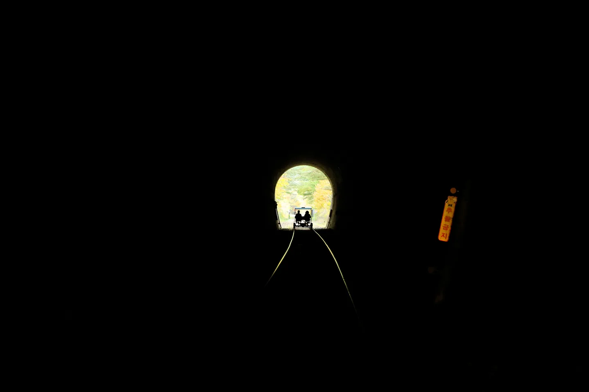
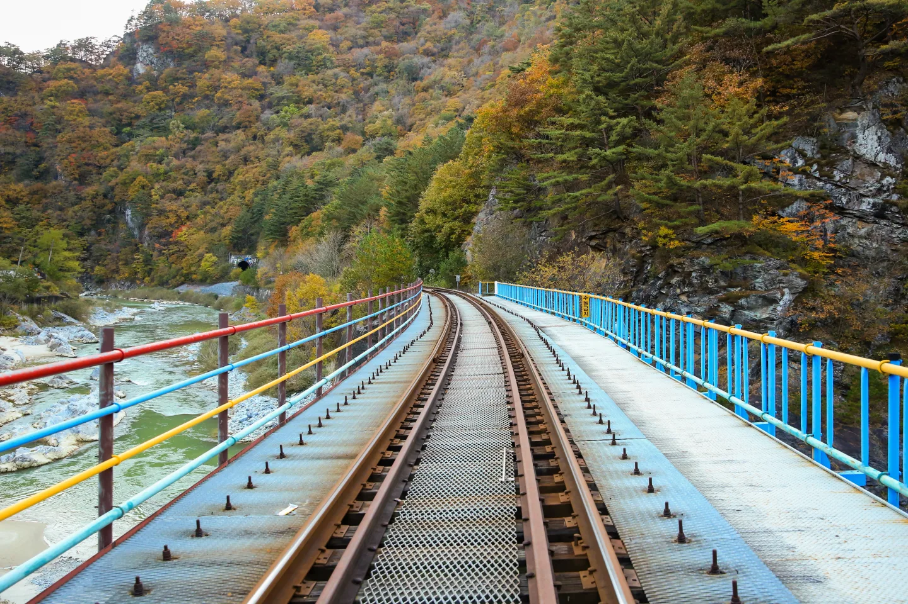
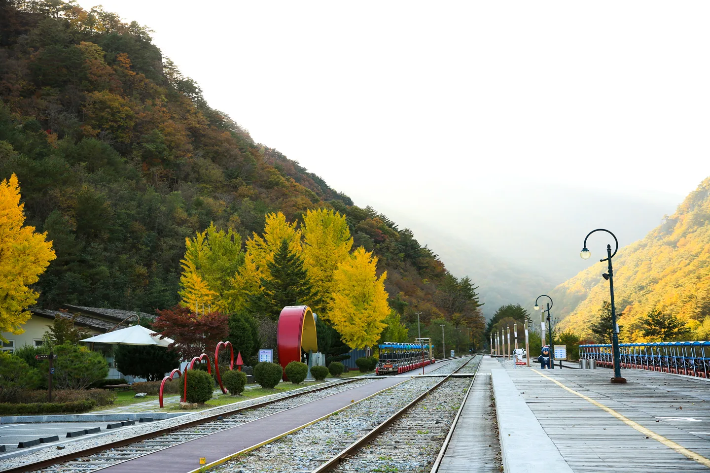
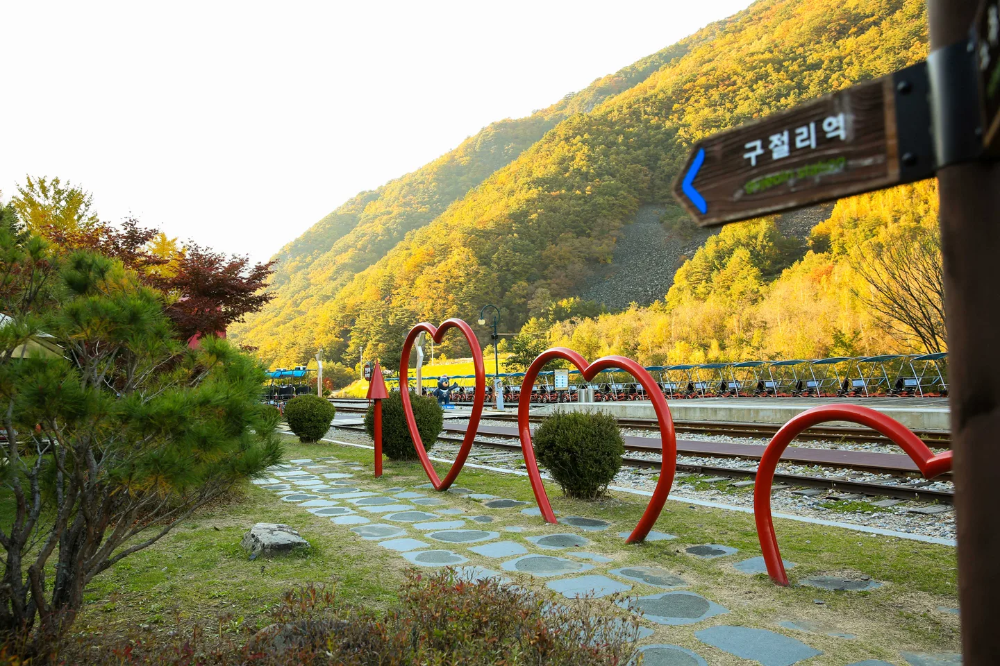
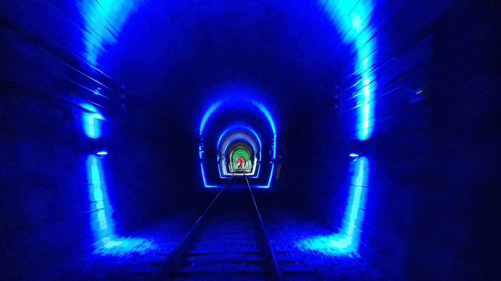
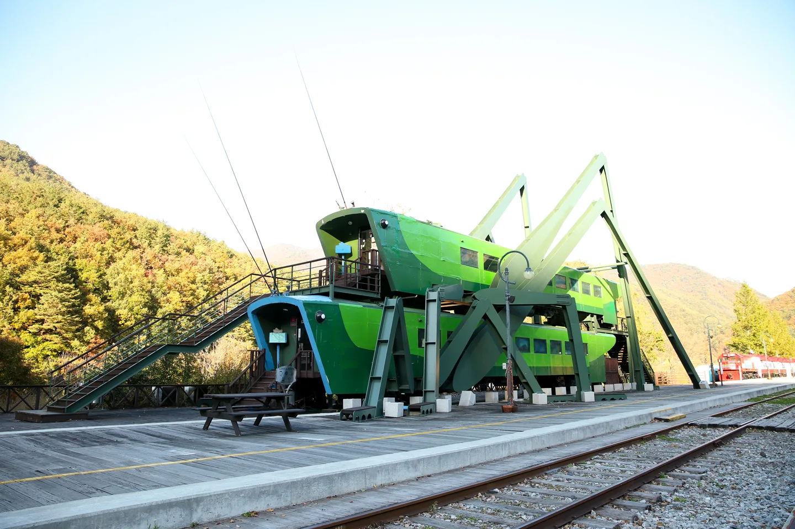
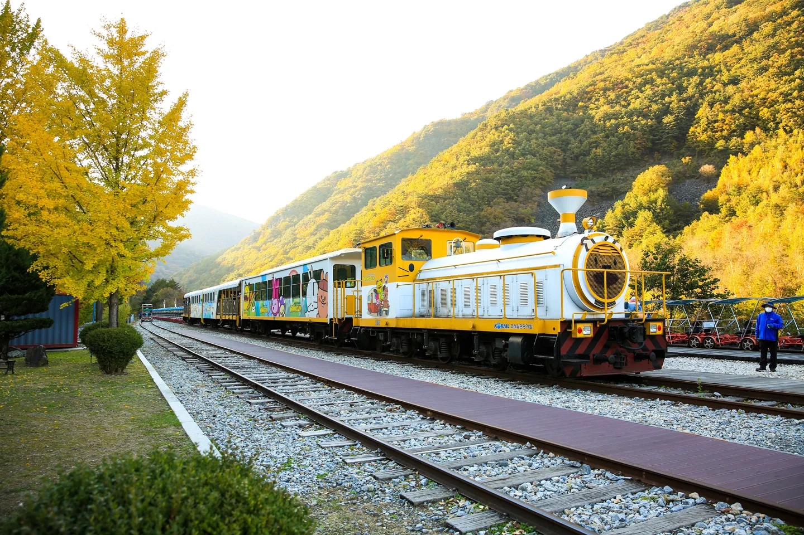
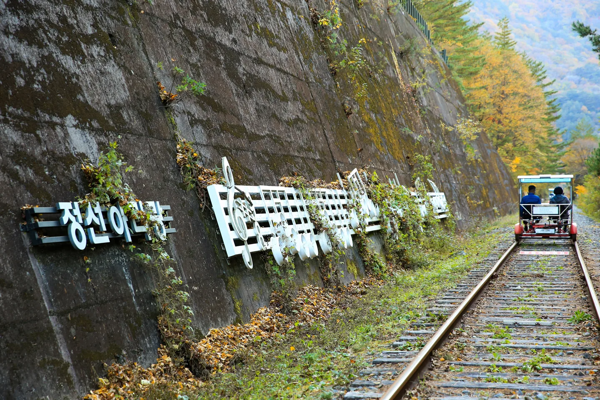

▲ 구절리역을 출발해 억새 우거진 옛 철길을 달리는 정선 레일바이크. 아우라지역까지 7.2km, 마지막 1km는 오르막이다
강원 정선 여량면 구절리역에서 출발해 아우라지역까지 이어지는 정선 레일바이크는 정선선 옛 철길 7.2km를 그대로 활용한 코스다. 폐선 위를 달린다는 점에서 흔한 유원지 놀이기구와는 결이 다르다. 강과 계곡을 옆에 끼고, 터널을 두 번 통과하고, 철교 위에서 발밑으로 물살을 내려다보는 구간까지 있다. 문제는 여기부터다. 운행 시간표를 놓치면 그날 탑승 자체가 불가능하고, 예매 방법과 좌석 종류를 헷갈리면 현장에서 인원 배정이 꼬인다. 이 기사는 운행시간·요금·예매·소요시간·주차·연계 관광까지, 실제로 다녀오는 순서 그대로 정리했다.
1. 구절리~아우라지 7.2km, 어떤 길을 달리나

▲ 구절리역 인근 풍경. 레일바이크 코스는 이런 산과 강줄기 사이를 오간다 ⓒ 강원관광재단

▲ 코스 중간의 터널 구간. 어둠 속에서 출구의 빛만 보고 페달을 밟게 된다 ⓒ 강원관광재단
정선 레일바이크는 구절리역을 출발해 아우라지역까지 약 7.2km, 시속 15~20km로 달린다. 강과 계곡, 숲이 번갈아 등장하고 터널을 통과하며 철교 위로 강물을 내려다보는 구간도 있다. 코스 대부분은 완만하지만, 마지막 1km는 오르막 경사로라 초반보다 페달이 무거워진다는 점은 미리 각오해 두는 편이 낫다. 우천 시에도 정상 운행하며, 현장에서 우비를 별도로 판매한다.

▲ 강 위를 가로지르는 철교 구간. 코스 중 발밑으로 물살이 보이는 몇 안 되는 구간이다 ⓒ 강원관광재단
레일바이크 구간의 순수 주행 시간은 약 30~40분이다. 아우라지역에 도착하면 레일바이크는 그대로 두고, 풍경열차로 갈아타 구절리역으로 되돌아오는 구조다. 즉 편도만 페달을 밟고, 복귀는 앉아서 창밖을 보면 된다. 왕복이 아니라 편도+열차 복귀라는 점을 모르고 갔다가 헷갈리는 경우가 많다.
2. 운행 시간표 — 하절기 5회, 동절기 4회

▲ 출발을 기다리는 구절리역 승강장의 레일바이크 행렬. 하루 운행 횟수가 정해져 있어 시간을 놓치면 다음 회차까지 기다려야 한다 ⓒ 강원관광재단
정선군청 관광포털 기준으로 정선 레일바이크는 계절에 따라 운행 시간과 횟수가 달라진다. 하절기(3~10월)는 오전 8시40분부터 오후 4시40분까지, 동절기(11~2월)는 오전 8시40분부터 오후 2시50분까지 운행한다.
| 구분 | 운행 기간 | 탑승 시간 | 하루 운행 횟수 |
|---|---|---|---|
| 하절기 | 3월~10월 | 08:40 · 10:30 · 13:00 · 14:50 · 16:40 | 5회 |
| 동절기 | 11월~2월 | 08:40 · 10:30 · 13:00 · 14:50 | 4회 |
정선군청 안내에는 주말에는 이용객이 몰려 시간이 변동될 수 있다고 명시돼 있다. 즉 위 시간표는 평시 기준이며, 주말·성수기에는 회차가 추가되거나 순서가 조정될 수 있다는 뜻이다. 방문 전날 홈페이지나 전화(033-563-8787)로 그날 시간표를 다시 확인하는 편이 안전하다.
3. 요금표와 예매 방법 — 2인승이냐 4인승이냐

▲ 탑승 전 매표소를 지나면 만나는 구절리역 이정표와 포토존. 예약 확인 후 이 승강장에서 탑승한다 ⓒ 강원관광재단
요금은 좌석 형태에 따라 나뉜다. 2인승은 30,000원(단체 27,000원), 4인승은 40,000원(단체 36,000원)이다. 인원수가 아니라 바이크 한 대당 가격이므로, 4인승에 두 명만 타도 요금은 그대로 4만원이라는 점을 헤아려야 한다.
| 좌석 형태 | 정상 요금 | 단체 요금 |
|---|---|---|
| 2인승 | 30,000원 | 27,000원 |
| 4인승 | 40,000원 | 36,000원 |
예매는 정선레일바이크 공식 홈페이지의 실시간 예약을 이용하는 방식이 기본이다. 7~8월 성수기에는 단체 예약을 받지 않는다는 점도 참고할 부분이다.
정선레일바이크 공식 홈페이지에서 확인 가능4. 소요 시간 총정리 — 페달 30~40분, 전체는 1시간30분 안팎

▲ 색색의 조명이 켜진 또 다른 터널 구간. 구간마다 조명 색이 달라 사진 찍기 좋은 포인트로 꼽힌다 ⓒ 강원관광재단
전체 일정을 시간 단위로 쪼개면 다음과 같다. 매표·대기에 20분 안팎, 레일바이크 주행 30~40분, 아우라지역 도착 후 환승 대기, 풍경열차 복귀까지 합쳐 총 소요시간은 약 1시간30분으로 잡는 것이 무난하다. 탑승 시간에 늦으면 그 회차를 놓칠 수 있으므로, 최소 20~30분 전에는 구절리역에 도착해 매표와 좌석 확인을 마치는 편이 좋다.
| 구간 | 소요 시간 |
|---|---|
| 매표·탑승 대기(권장 도착 시간) | 약 20~30분 |
| 레일바이크 주행(구절리 → 아우라지) | 약 30~40분 |
| 아우라지역 환승 대기 및 풍경열차 복귀 | 나머지 |
| 전체 체감 소요시간 | 약 1시간30분 |
5. 주차와 편의시설 — 여치카페·어름치카페

▲ 구절리역에 있는 '여치카페'. 곤충 모양을 본뜬 독특한 외관이 포토존으로 인기다 ⓒ 강원관광재단
구절리역과 아우라지역 모두 주차장을 갖추고 있다. 주소는 강원 정선군 여량면 노추산로 745(구절리역)이며, 서울에서 자가용으로 약 3시간 거리다. 구절리역에는 '여치카페', 종착지인 아우라지역에는 '어름치카페'가 있어 대기 시간이나 복귀 후 쉬어가기 좋은 포토존 역할을 한다.
정선군청 관광포털에서 확인 가능
▲ 아우라지역에서 구절리역으로 되돌아올 때 타는 풍경열차. 레일바이크는 편도만 페달을 밟는 구조다 ⓒ 강원관광재단

▲ 정선아리랑 가락을 형상화한 조형물 옆을 지나는 레일바이크. 구절리~아우라지 구간 곳곳에 이런 포토 포인트가 있다 ⓒ 강원관광재단
6. 레일바이크 다음 코스, 아우라지역에서 뭘 볼까
아우라지역에 내리면 레일바이크로 끝내기 아까운 동네가 기다린다. 아우라지는 평창에서 흘러온 송천과 삼척 쪽 골지천이 합류하는 지점으로, 강원도 무형문화유산인 정선아리랑의 발상지로 꼽힌다. 두 물줄기가 '어우러진다'는 뜻에서 이름이 붙었고, 뱃사공이 서울까지 뗏목으로 목재를 나르며 아리랑을 부르던 나루터였다는 이야기가 전해진다.
합수부 일대에는 3월부터 11월까지 매일 오전 9시~오후 6시 무료로 운행하는 20인승 나룻배 '아우라지호'가 있어, 물줄기가 만나는 지점을 직접 배로 건너볼 수 있다. 매년 여름에는 뗏목 시연과 전통 배 체험, 정선아리랑 공연이 함께 열리는 아우라지 뗏목축제도 열린다. 도보로 이동 가능한 거리에 아우라지 야영장이 있어, 레일바이크와 1박 캠핑을 묶어 일정을 짜는 여행객도 있다.
✅ 정선 레일바이크, 가기 전 체크리스트
· 코스는 구절리역 → 아우라지역 7.2km, 마지막 1km는 오르막
· 순수 주행 30~40분, 복귀는 풍경열차, 전체 소요시간은 약 1시간30분
· 하절기(3~10월) 5회, 동절기(11~2월) 4회 운행, 주말엔 시간 변동 가능하니 전날 재확인
· 요금은 인원이 아니라 대당 기준 — 2인승 3만원(단체 2만7천원), 4인승 4만원(단체 3만6천원)
· 예매는 정선레일바이크 홈페이지 실시간 예약, 7~8월은 단체 예약 불가
· 최소 20~30분 전 도착해 매표·탑승 확인, 우천 시에도 정상 운행(우비 별도 판매)
· 아우라지역 도착 후에는 아우라지 합수부·나룻배·아리랑 발상지까지 묶어 돌아보기 좋다